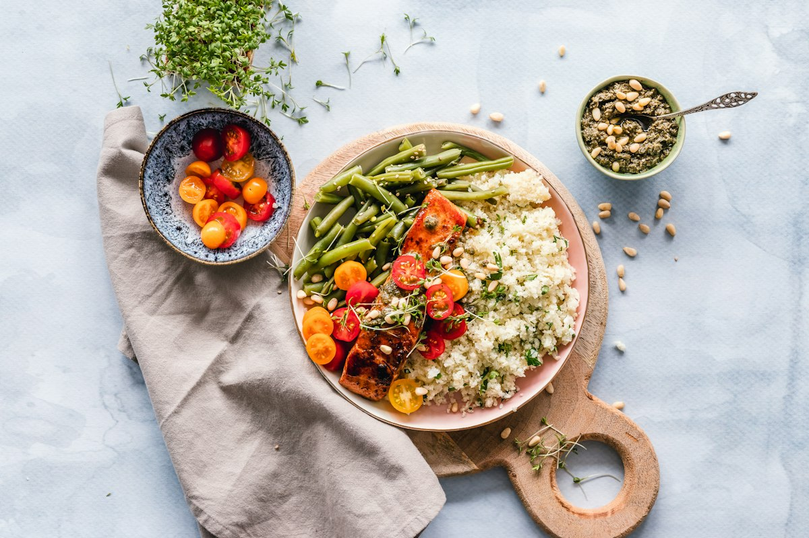

Nutrición y control de peso en La Conchita, Texcoco: atención personalizada, seguimiento cercano y opciones deliciosas para que el cambio sea llevadero.
Agendar por WhatsApp595 954 5191Nutrición profesional para cada etapa y objetivo.
Programa de pérdida de peso con seguimiento cercano.
Valoración y metas claras desde la primera visita.
Plan nutricional guiado paso a paso.
Galletas y postres ricos para disfrutar sin culpa.
Citas de control para ajustar tu plan y medir avances.
Te acompañamos y motivamos durante todo el proceso.

En Dánika creemos que bajar de peso es un proceso de cambio de hábitos, no solo una dieta. Escuchamos tus dudas, te explicamos cada paso y te acompañamos con calidez para que alcances tus objetivos de forma sostenible.
✔ Atención personalizada
✔ Seguimiento continuo
✔ Postres y snacks saludables
Calificación 4.9 ★ en Google
★★★★★
“Excelente servicio y atención, la doctora es muy amable y te lleva de la mano. De los mejores tratamientos para pérdida de peso.”
— Paciente en Google★★★★★
“Excelente doctora, plan nutricional y servicio. Adicional los postres son una delicia.”
— Paciente en Google★★★★★
“La mejor doctora de Texcoco. Muy amable y se toma el tiempo para explicar. Los postres son deliciosos y saludables.”
— Paciente en GoogleResolvemos tus dudas antes de tu cita.
Escríbenos por WhatsApp y te compartimos los costos vigentes de consulta y seguimiento.
Escríbenos por WhatsApp o llámanos al 595 954 5191; te damos la primera fecha disponible.
Martes: 12:30 – 16:30; Miércoles y viernes: 12:30 – 14:00; Jueves: 12:00 – 16:00; Sábado: 15:00 – 17:30; Domingo y lunes: Cerrado.
Calle Francisco Sarabia 7, Mz 005, Col. La Conchita, 56130 Texcoco de Mora, Edo. Méx. Usa «Cómo llegar» para abrir la ruta.
No. No. Además de tu plan, contamos con postres y galletas saludables para que disfrutes el proceso.
La consulta es con cita en horarios específicos; revisa la tabla de horario y agenda por WhatsApp.
Normalmente cada 2 a 4 semanas, para medir avances y ajustar tu plan.
Efectivo y transferencia; pregunta por pago con tarjeta y paquetes de seguimiento.
📍 Dirección: Calle Francisco Sarabia 7, Mz 005, Col. La Conchita, 56130 Texcoco de Mora, Edo. Méx.
📞 Teléfono: 595 954 5191
| Martes | 12:30 – 16:30 |
| Miércoles y viernes | 12:30 – 14:00 |
| Jueves | 12:00 – 16:00 |
| Sábado | 15:00 – 17:30 |
| Domingo y lunes | Cerrado |